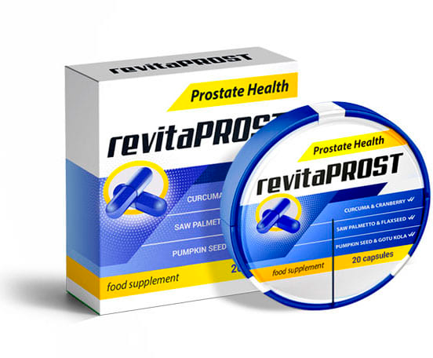

Jak wyleczyć zapalenie prostaty?
Codziennie do naszej redakcji napływa ogromna liczba listów, ale jeden z nich szczególnie przykuł naszą uwagę. Wierzymy, że będzie on przydatny dla męskiej połowy naszych czytelników.

Chcę podzielić się swoją historią i być może pomóc innym mężczyznom cierpiącym na zapalenie prostaty w odzyskaniu zdrowia. Z oczywistych względów chcę pozostać incognito.
Po pierwsze, czym jest zapalenie prostaty? Krótko mówiąc, jest to zapalenie gruczołu krokowego. Tego samego, który produkuje substancję, pozwalającą plemnikom podróżować do celu i nie umierać we wczesnych stadiach ich i tak krótkiego życia. Również prostata blokuje kanał moczowy podczas stosunku, zapobiegając przedostawaniu się plemników do pęcherza i odwrotnie. Istnieje wiele przyczyn zapalenia gruczołu krokowego, ale główne z nich to siedzący tryb życia i alkohol.
Moje problemy pojawiły się na długo do tego jak dowiedziałem się, czym jest zapalenie gruczołu krokowego. Zawsze wydawało mi się, że to schorzenie, które dotyczy emerytów i nie mam się czym przejmować. Od około 15 roku życia okresowo zacząłem odczuwać ból. Ból narastający o bardzo dziwnym charakterze. Wtedy nie potrafiłem nawet wyjaśnić, w jakim miejscu. Zdarzało się to bardzo rzadko i nie przywiązywałem do tego żadnej wagi. Nigdy nie wiadomo, co to może być. Wytrzymywałem te 5-10 minut.
Minęło 10 lat. W tym czasie prawie nic mi nie przeszkadzało. Ból pojawiał się raz na 2-3 miesiące, czasem rzadziej. I z jakiegoś powodu utkwiło mi w głowie, że pewnie każdy tak ma. Po prostu jest to temat tabu. Najbardziej niekomfortowe były objawy po seksie. Nie jest to dobry moment na zwijanie się z bólu w zimnym pocie.

I tak, w wieku 25 lat, poczułem dotkliwy ból w pachwinie. Tydzień później wzmocnił się tak bardzo, że noga zaczęła drętwieć od wewnętrznej strony do kolana. Pierwszą rzeczą, która przyszła mi do głowy, była przepuklina. Ponadto przeszedłem 4 operacje na przepuklinę, z których trzy były pachwinowe. Uczucie było bardzo podobne i zacząłem mentalnie przygotowywać się do operacji. Opierając się na tym założeniu zapisałem się do chirurga, który zbadał pachwinę, zaprzeczył moim domysłom i wysłał mnie do urologa.
Wizyta u urologa była bardzo nieprzyjemna. Lekarz postawił mnie w niezbyt wygodnej pozycji i wsadził palec (a w odczuciu całą rękę) w nietykalne dla żadnego mężczyzny miejsce. Powiem tak: jeśli każą ci się zrelaksować w takiej sytuacji, nie musisz nawet próbować. Spędziłem tak około minuty. Oczywiście w takiej sytuacji trudno się skoncentrować, ale musiałem powiedzieć, gdy ból się nasili. I nasilał się w momencie ucisku na prostatę.
Po zakończeniu procedur diagnostycznych lekarz zaproponował przejście do gabinetu, jednocześnie żartując coś o hipotermii. Ale gdy tylko usiadł przy stole, miły pan zamienił się w prokuratora. Wysłuchałem najostrzejszego i najbardziej upokarzającego wykładu, że mam dolegliwości 45-50 latków. Nastąpiła pauza. Ciszę przerwałem pytaniem "CO ROBIĆ?". Lekarz się uspokoił i zaczął powoli wyjaśniać, z czym mam do czynienia. Przepisał czopki, tabletki i dalsze badania.
Leczenie pomagało. Nawiasem mówiąc, za radą tego samego lekarza zacząłem uprawiać sport (mówią, że zapobiega patologicznej stagnacji w prostacie). Pewnego dnia po basenie poczułem znajome pieczenie. Poszedłem do innego lekarza. Znowu ta sama historia z badaniami i tymi samymi zaleceniami. Pomagało na chwilę, ale problem wracał.
Zrozumiałem, że standardowa praktyka urologów polega nie na leczeniu choroby, ale na tymczasowym łagodzeniu objawów. Dlatego zdecydowałem się działać samodzielnie. Przeczesałem cały Internet, przeczytałem mnóstwo opinii o różnych lekarzach. Na jednym z forów natknąłem się na wątek o profesorze, który potrafi wyleczyć zapalenie gruczołu krokowego raz na zawsze. Fakt, jego konsultacja kosztuje niemałe pieniądze.
Ale co zrobić? Umówiłem się, czekałem na wizytę półtora miesiąca. Przyszedłem do profesora z całą teczką badań. Nawet na nie nie popatrzył, wyjął z szuflady opakowanie tabletek, wręczył mi je i wysłał do recepcji, żeby opłacić wizytę.
Lek nazywał się . Zastosowałem całą kurację, zgodnie z instrukcją. Efekt był imponujący: zniknął nie tylko ból i ogólny dyskomfort. Potencja znacznie się poprawiła, erekcja stała się silniejsza i dłuższa.

Co najlepsze: minęło półtora roku odkąd ukończyłem kurację i od tego czasu choroba nie wróciła.
Niedawno postanowiłem powtórzyć kurację profilaktycznie i dla zwiększania potencji.Sprawdziłem w Internecie, czy ten lek nadaje się do takich celów. Jak się okazało, tak, nadaje się.
I odkryłem kolejny interesujący punkt: koszt jest na stronie kilkakrotnie niższy, niż to ile zapłaciłem w klinice profesora. Lek można zamówić bezpośrednio u producenta bez dodatkowych opłat.A profesor okazał się zwykłym oszustem. Dlatego chcę udostępnić link do strony, na której można zamówić w cenie producenta: